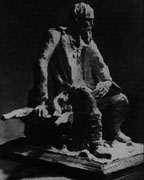
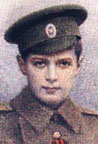
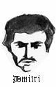

part4.shtml

PART FOUR
- * BOOK TEN - Boys
- Summary
- Analysis
- * BOOK ELEVEN - Brother
Ivan Fyodorovich
- I.-V. At Grushenka's/The injured foot/A little demon/A hymn and a secret/Not you, not you!
- Summary
- Analysis
- VI.-X. The first interview with Smerkyakov/The Second visit to Smerdyakov/The third and last interview with Smerdyakov/The devil. Ivan Fyodorovich's nightmare/"It was he who said that!"
- Summary
- Analysis
- * BOOK TWELVE - A Miscarriage of Justice
- Summary
- Analysis
BOOK TEN - Boys

Summary
Kolya Krassotkin, the boy whom the captain's son stabbed earlier on, is
a mature 13 year-old. His knowledge of history and socialism impresses those
around him. He has been training a dog, Perezvon (Ringing Bells), to do
tricks. With his friend, Smurov, they head to the captain's house to visit
the bed-ridden Ilyusha (the captain's son). When Kolya encounters Alyosha
at the door, they immediately engage in conversation. Kolya explains how
he had taken on Ilyusha as his "protegé" until the boy
had defied him. When Ilyusha and his friends attempted feed a dog name Zhutchka,
a needle-filled crust of bread Kolya made him feel guilty for its possible
death. At Ilyusha's beside Kolya continues to taunt the sick boy, making
him feel worse. He then calls in Perezvon and admits that it was Zhutchka
all along. The toy cannon that is also given by Kolya, is particularly liked
by Illyusha's Mamma. When the doctor from Moscow enters to examine the boy,
Kolya and Alyosha converse further outside. Alyosha quickly learns that
all of Kolya's knowledge is simply rubbish and repetition. When Kolya confesses
his precocity, Alyosha is drawn to him. The doctor announces that Ilyusha
has little time to live. Alyosha vows to visit the boy often.
Analysis
The purpose of this sway from the action is two-fold. First of
all, this is, once again, Dostoyevsky's chance to take a stab at the absurdity
of socialism. What better way to mock the socialist cause then place its
teachings in the mouths of thirteen-year-olds? [Please consult The Demons
if you wish to further understand Dostoyevsky's vehement opposition to the
socialist cause.] In addition, Dostoyevsky shows how Alyosha the Christ-like
figure, can influence youths. By entrusting the youth with the ideas of
Zosima, Alyosha a living hope. By accepting all as equals, Alyosha also
gains Kolya as a disciple.
BOOK ELEVEN - Brother Ivan Fyodorovich

I.-V. At Grushenka's/The injured foot/A
little demon/A hymn and a secret/Not you, not you!
Summary
Grushenka has been ill during the last two months. Alyosha has
become her confidant. She admits that she and Dmitri have been quarreling.
In addition, she begs him to discover what the secret is between Ivan and
Dmitri. On his way to the prison, Alyosha stops by Madame Khokhlakov's.
Not only is her foot injured, but her pride is also injured by scathing
remarks in the journal, Gossip. Alyosha also visits Lise, who professes
her obsession with pain and suffering. She prays to God to be tortured.
As Alyosha leaves, she crushes her hands in the door and cries out, "I
am a wretch..." At the prison entrance, Alyosha notices Rakitin. He
learns from Dmitri that Rakitin is writing an article about how environment
caused him to kill his father. Dmitri confesses that he is prepared to suffer
for his past sins. He hopes for a rewarding future with Grushenka. That
is why he is considering Ivan's secret offer to break out of prison. Though
Alyosha does not immediately approve, he does say the he always knew that
Dmitri was not guilty of parricide. Afterwards, Alyosha encounters Ivan
and Katerina. Ivan says that Katerina may have a document that proves Dmitri's
guilt. Ivan asks Alyosha who the killer is and the boy responds, "it
wasn't you who killed Father." "
Analysis
This section shows Dostoyevsky's ongoing belief in redemption
through physical suffering. This was the case in Crime and Punishment and
the Devils. Grushenka is at the same time overcoming her physical illness
and her involvement in the crime. The same is true for Madame Khokhlakov,
who subtly drove Dmitri to his father. Dmitri is also beginning the long
journey towards redemption. He is prepared to accept someone else's guilt,
since he has sinned in the past. His only fear is that he may not be able
to have those future days of joy without Grushenka by his side. In contrast,
Lise does not use suffering for redemption. It is shallow and superficial.
She delights in reviling in everyone.
Here are web sites for some of the subjects
mentioned in the book:
- Eugene Onegin, a novel in verse, by ALEXANDER PUSHKIN
- Claude Bernard, French Physiologist
VI.-X. The first interview with Smerkyakov/The
Second visit to Smerdyakov/The third and last interview with Smerdyakov/The
devil. Ivan Fyodorovich's nightmare/"It was he who said that!"
Summary
Ivan's sickness began after his first encounter with Smerdyakov.
The servant accuses Ivan of suspecting the murder and fleeing to Moscow
in order not to get involved. Ivan threatens to reveal that Smerdyakov can
sham seizures. Smerdyakov counters with promising not to say anything of
their conversation the night before the murder. In the second meeting, Smerdyakov
says that Ivan silently assented to Fyodor's murder by leaving since he
wanted the inheritance. Ivan goes to see Katerina, who shows him a letter
from Dmitri that proves Dmitri's guilt. Upon returning to see Smerdyakov,
the servant openly admits Fyodor. He argued that he only acted as an "instrument"
for Ivan. Ivan provided the moral justifications for the murder. Shocked,
Ivan returns home to find a devil dressed as a shoddy French gentleman "sponger".
The devil tries to prove its existence by relying on Ivan's own weak arguments.
When he brings up Ivan's private fears, Ivan throws a cup at him. Immediately
thereafter, Alyosha shows up and says that Smerdyakov committed suicide.
Ivan says the devil had already told him so.
Analysis
Dostoyevsky uses the Smerdyakov interviews to solve the murder.
Of course, physical guilt is only half. Ivan's problem is metaphysical guilt.
By not being his "brother's keeper" and remaining in town, Ivan
is equally as guilty, according to Dostoyevsky.
Here are web sites for some of the subjects
mentioned in the book:
- Cane and Abel
- John 10:11 The Good Shepard
BOOK TWELVE - A Miscarriage of Justice

SummaryPeople congregate for the much-awaited trial. The women are particularly interested in Dmitri's fate. Upon entering the courtroom, he pleads guilty to everything but the theft and the murder of his father. Fetyukovich, Dmitri's lawyer succeeds in discrediting the testimony of Grigory, Rakitin, Captain Snegiryov, and Trifon Borisich through cross-examination. When the three doctors, Herzenstube, the Moscow doctor, and Varvinsky, testify, each suggests a different psychological state for Dmitri. Neither the defense nor the prosecution find any sense in their testimonies. When Alyosha takes the stand, everyone listens respectfully. He provides a good testimony for Dmitri, suggesting the existence of the pouch around Dmitri's neck. (Dmitri used to pound it with his fist to remind him of his ignominy). Katerina, in her testimony, explains how she shamed herself when she came to him to save her father. Grushenka had nothing new to add. Ivan bursts into the courtroom and explains all that he heard from Smerdyakov, but fails to have any evidence to prove it. Saying that the devil visited him last night undermines the validity of his testimony. He led out of the courtroom. After a short recess, Katerina enters the courtroom claiming she reverses her statements and has a letter to prove Dmitri's guilt. While drunk, Dmitri wrote that he might be forced to kill his father. Grushenka accuses her of being a serpent. The prosecutor gives his closing speech three parts based on psychological reasoning. First of all, he recounts the intricately describe the events that transpired. He shows how Dmitri could be motivated to commit this "bloodshed." Then he dismisses Ivan's theory on Smerdyakov by suggesting that the servant had neither the motive nor the capacities to commit the murder. Besides, Ivan, after receiving the news the day before, did not immediately notify the authorities. Finally, he argues that Dmitri had both hatred of his father and need of money as motive. Kirillovich appeals to the jury saying that they are the "champions of our Holy Russia." Fetyukovitch's argument for the defense emphasizes that all of the prosecution's psychological evidence cuts both ways. The testimonies of all the witnesses are, after all, simply hearsay. In addition, he suggests that there is little proof that the money stolen even exists. He says that even the term "parricide" is false, since Fyodor was not really a father. The audience breaks into applause as he argues that Dmitri should be given the chance for redemption. Everyone believes that he will be acquitted, but the peasants stand firm. Dmitri is found guilty on all counts.
Analysis
Dostoyevsky uses this book to display the injustice of the Russian
courts. Neither convincing professional arguing from Fetyukovitch, or strong
emotional pleas from Ivan and Alyosha can sway the court's desire for what
they deem "justice". Even when the evidence against Dmitri becomes
extremely tenuous through sharp criticism of the witnesses' testimony, the
jury proclaims Dmitri's guilt. The two attorneys closing arguments are used
to this day as models of intricate legal thought.
Here are web sites for some of the subjects
mentioned in the book:
- Aesop and his Fables
- The Moravians and Herrnhuter
- Panem et circenses
- Ann Radcliffe's gothic novels